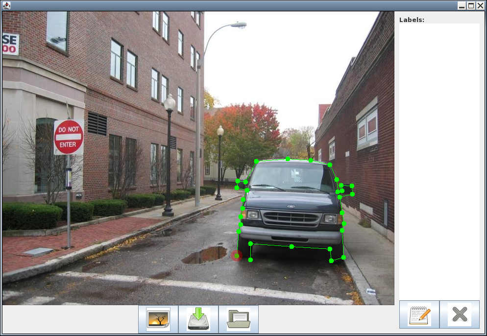
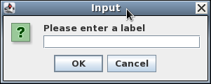
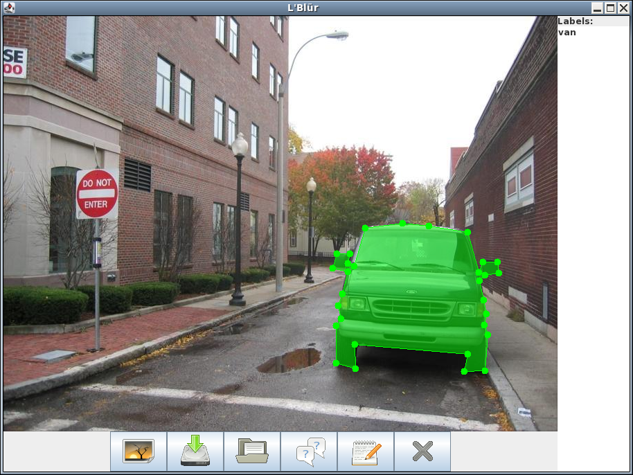

Ok, to mark in image all you have to do is left click on the image. The dots will be joined up automatically, once you have something that looks like this:
Just click on the starting point (marked red in the above image) and the object will be completed. You will then be prompted to enter a label
Just enter a label for the object and press ok. The label will now have appeared in the box at the side
Now just keep labelling all the objects. Don't forget to label other images, save the work you've done etc

Click on the button marked with a red spot in the above picture. This will open a new window. Just navigate to your file and double click it to open

You had better save your work then. To do this click the button marked red in the above image. This saves your labels. Then click the X in the top right corner, this is marked green. Bye Bye.
To load the labels you have presiously tagged for an image all you need to do is hit the load button (marked red in the picture above). Everything else is done for you.
To edit a label either right click on the labelled object, this is green in the above image. Or select the label you want to edit in the list, this is marked blue in the above image and then press the edit button, this is marked red in the above image. You will then be prompted for a new label
First select the label in the list, this is marked blue. Then press the delete button, this is marked red. The object and label are now gone and you can redraw it correctly